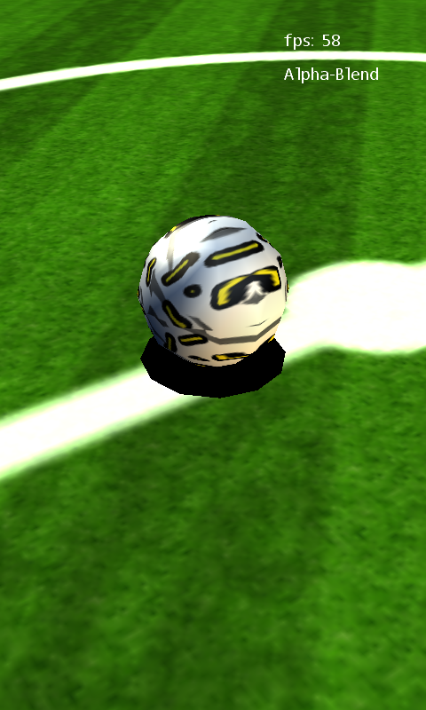

Soccer Pitch
Ported from Microsoft's XNA 4.0 Soccer Pitch sample for Windows Phone.
Source for this sample on GitHub ↗

Play ▸Opens in a new tab. A touch screen is needed for the original controls.
About this sample
Explore a procedurally built football pitch with two independently tiled grass textures, white painted lines, an animated camera, a textured ball and its shadow. A touch changes the line rendering between Alpha-Blend and Alpha-Test.
Controls
| Action | Control |
|---|---|
| Switch line rendering | Touch and release anywhere on the game |
| Exit | Gamepad Back |